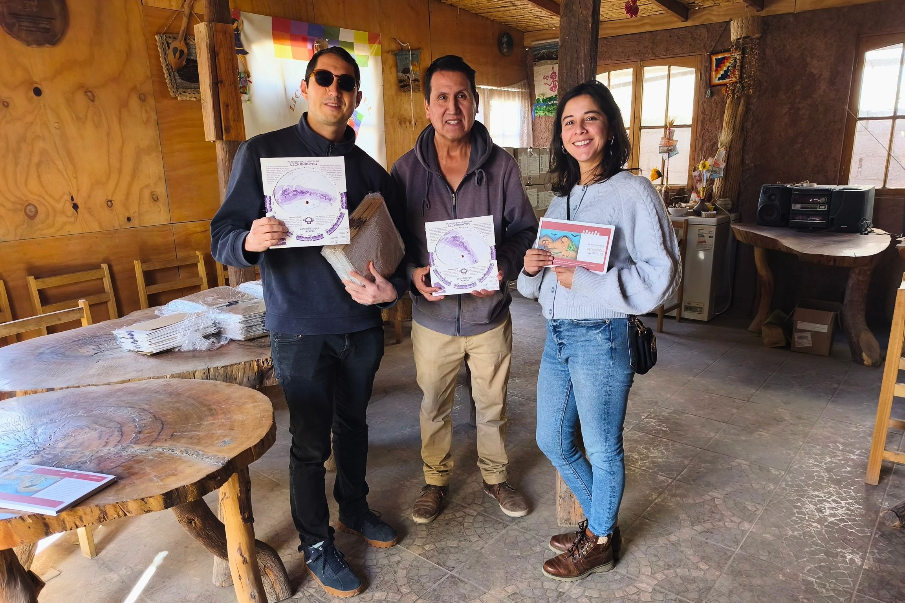
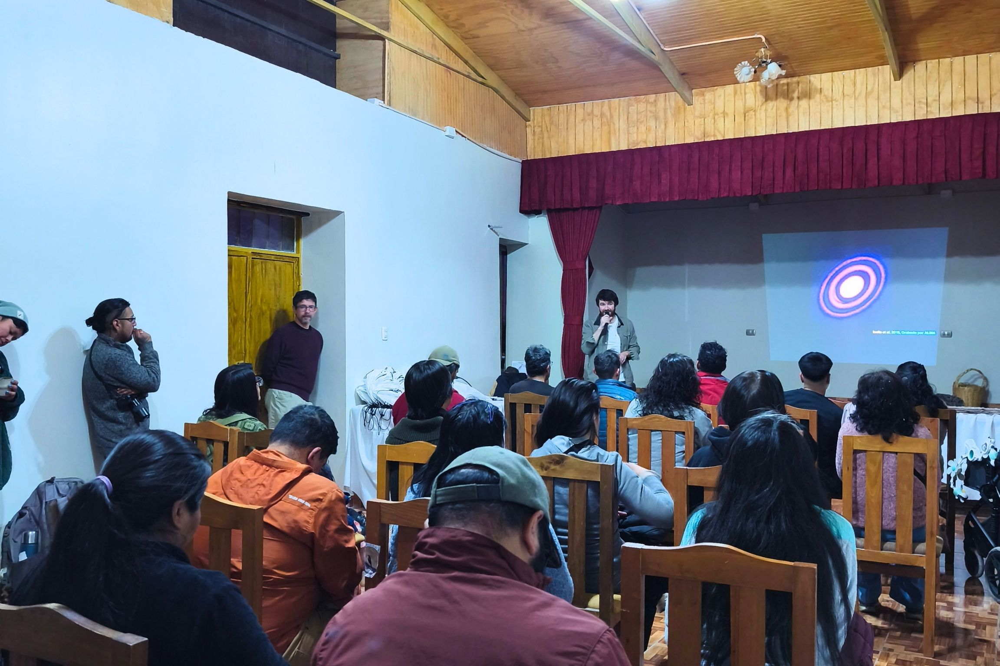

Lanzamiento en Toconao
Presentación del primer Planisferio Astrodiálogos Lickan Antay.

Fundación Astrodiálogos, junto a Aira Lay Lay, Estación Ckamur y colaboradores Lickan Antay del territorio atacameño, presentó en Toconao el primer Planisferio Astrodiálogos Lickan Antay: una herramienta educativa y cultural que invita a reconocer el cielo desde una perspectiva situada en el territorio, integrando astronomía, memoria, patrimonio y diálogo intercultural.
El lanzamiento se realizó el sábado 13 de junio de 2026 en el Club Deportivo de Toconao, junto a la plaza del pueblo, en una jornada abierta que reunió a habitantes de la comunidad, estudiantes, educadores, investigadores y representantes de iniciativas vinculadas a la astronomía y al patrimonio local.

Un planisferio es una herramienta que permite reconocer constelaciones, estrellas y otros objetos visibles en una fecha y hora determinadas. Gracias a un sistema de discos móviles, reproduce el aspecto cambiante del cielo a lo largo del año y ayuda a orientarse durante la observación nocturna. El Planisferio Astrodiálogos Lickan Antay toma este concepto clásico y lo adapta al territorio atacameño, incorporando la visión de las constelaciones oscuras, referencias culturales y educativas que invitan a comprender el cielo no solo como un objeto de estudio científico, sino también como parte de la memoria, el paisaje y la identidad de quienes lo habitan.
La jornada comenzó con la experiencia inmersiva de realidad virtual Ckunza Universo, orientada a introducir el diálogo entre astronomía científica y conocimiento lickanantay. Luego se realizó la charla “Vistas Astronómicas desde el Atacama”, a cargo del Dr. James Miley, astrónomo operador e investigador del Observatorio ALMA y del Núcleo Milenio YEMS. Posteriormente se presentó la Estación Ckamur, abordando su proyección en el territorio y su vínculo con la astronomía y el patrimonio atacameño.
La actividad continuó con la presentación del planisferio, donde se explicó qué es, qué representa, cómo fue desarrollado y de qué manera puede ser utilizado para reconocer elementos del cielo nocturno. Como cierre, las y los asistentes recibieron kits de observación y se trasladaron a un punto de observación astronómica, donde usaron el planisferio de manera práctica para orientarse e identificar el cielo de Toconao.
El Planisferio Astrodiálogos Lickan Antay es el resultado de varios años de trabajo colaborativo entre Fundación Astrodiálogos, educadores, cultores, representantes comunitarios y colaboradores Lickan Antay del territorio atacameño. Su desarrollo se enmarca en una línea de trabajo más amplia orientada a generar espacios de encuentro entre astronomía contemporánea, educación, patrimonio y conocimientos locales sobre el cielo.
El planisferio nace de una colaboración construida con respeto y diálogo, reconociendo que el cielo también forma parte del territorio, la memoria y la educación. En este proceso, Fundación Astrodiálogos ha buscado acompañar y articular el desarrollo del material, siempre reconociendo el rol central de las comunidades y personas Lickan Antay que le dan sentido cultural y territorial al proyecto.

Desde Fundación Astrodiálogos, el desarrollo del planisferio fue coordinado por Gabriel Ruete, antropólogo y cofundador de la fundación, y Sebastián Pérez, astrónomo, cofundador de la fundación, director alterno del Núcleo Milenio YEMS y profesor asociado del Departamento de Física de la Universidad de Santiago de Chile. Ambos trabajaron directamente en la concepción, investigación y desarrollo editorial del material, integrando perspectivas astronómicas, educativas e interculturales. El diseño gráfico estuvo a cargo de Camilo Núñez Díaz, mientras que el resto del equipo de Astrodiálogos contribuyó en la coordinación y ejecución de las actividades asociadas al proyecto.
El desarrollo de este primer planisferio fue posible gracias al trabajo colaborativo de Fundación Astrodiálogos, al alero del Núcleo Milenio YEMS, junto a Aira Lay Lay, Estación Ckamur y colaboradores Lickan Antay del territorio atacameño. El proyecto contó con la participación de Manuel Silvestre, educador ambiental y guía de turismo de Toconao; Blanca Mundaca, directora del proyecto Estación Ckamur; y Esteban Araya Toroco, de Aira Lay Lay y cultor de la cosmovisión Lickan Antay.
Para el Núcleo Milenio YEMS, esta actividad representa una oportunidad para fortalecer la relación entre investigación astronómica de frontera, educación científica y comunidades locales. En un país donde algunos de los observatorios más importantes del mundo se ubican en territorios indígenas y rurales, iniciativas como esta permiten ampliar la conversación sobre la astronomía, incorporando perspectivas territoriales, culturales y educativas.
El lanzamiento del Planisferio Astrodiálogos Lickan Antay se enmarca en un esfuerzo colaborativo por crear materiales que permitan mirar el cielo desde Chile no solo como un laboratorio natural para la ciencia, sino también como un espacio de memoria, pertenencia y encuentro.
El Planisferio Astrodiálogos Lickan Antay fue desarrollado como una herramienta educativa y cultural en colaboración con actores locales del territorio. Fundación Astrodiálogos acompaña el desarrollo del material, pero no realiza su venta ni distribución comercial. En el territorio Lickan Antay, la distribución del planisferio queda bajo el derecho y responsabilidad de los actores locales participantes: Aira Lay Lay, Estación Ckamur, y Manuel Silvestre. Astrodiálogos utiliza el planisferio únicamente en actividades educativas y sin fines de lucro. Para personas o instituciones fuera del territorio Lickan Antay, aún estamos desarrollando la mejor forma de acceso al material.
Fuente: Comunicaciones Núcleo Milenio YEMS y Fundación Astrodialogos.
Galería de imágenes
Presentación del primer Planisferio Astrodiálogos Lickan Antay.

Una jornada comunitaria en torno a astronomía, memoria y patrimonio.

El planisferio fue desarrollado mediante una colaboración basada en respeto y diálogo.

Con Blanca Mundaca directora del proyecto.

Dr. James Miley hablando sobre el origen de los planetas.
{kind=link}
{kind=link}